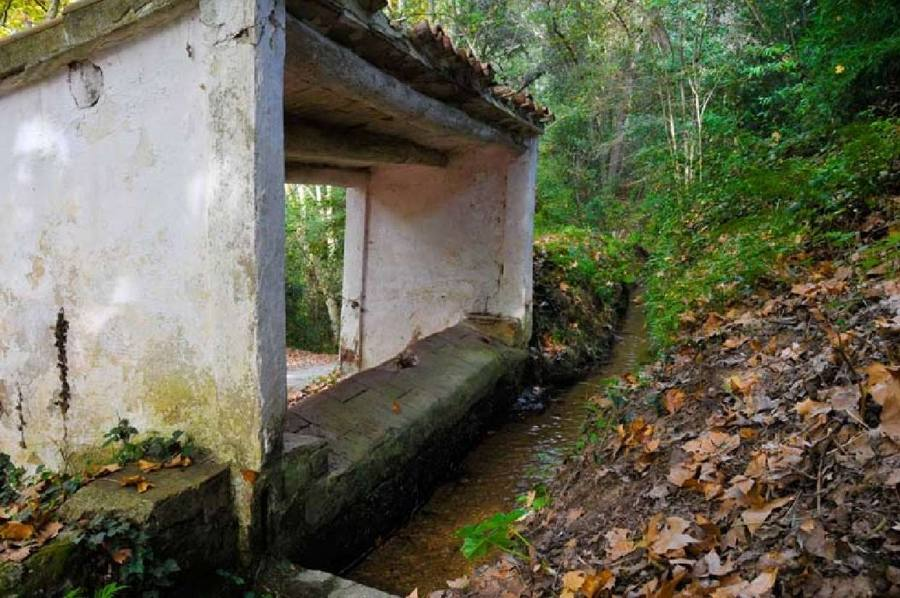

Ruta · Gualba
Aquesta volta, fàcil però llarga , s’enfila per les faldes solelles del Montseny fins dalt a can Plana, per anar baixant per la carena del costat nord-est de la vall fins a trobar el camí Ral.…